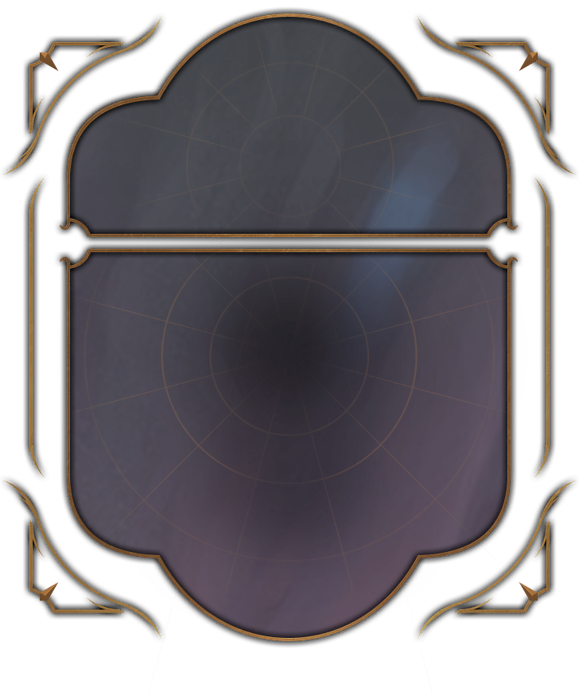
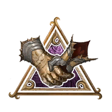

D20 + 加值 ≥ 难度等级，即为成功
骰子、检定框架、加值卡片、提示框、特效与字体取自你 Windows 上安装的游戏 Game.pak，按无损方式转换为浏览器资源。
滚动路径与 33 毫秒帧间隔依据游戏 DiceAnimation.xaml；网页移植仍需与游戏实录核对细节。音效来自 UI.bnk，保留分层与随机变体；浏览器播放仍需与游戏实录核对。
结果由浏览器的加密随机源产生。它可以为日常选择增加一点仪式感；问题和难度目前由你填写，还没有接入个人 Agent。